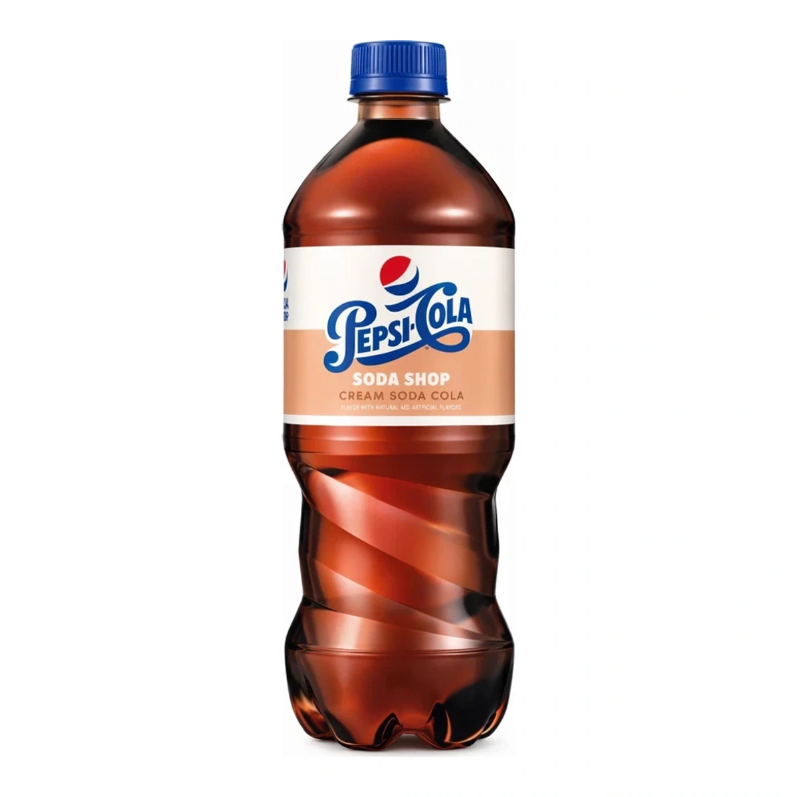
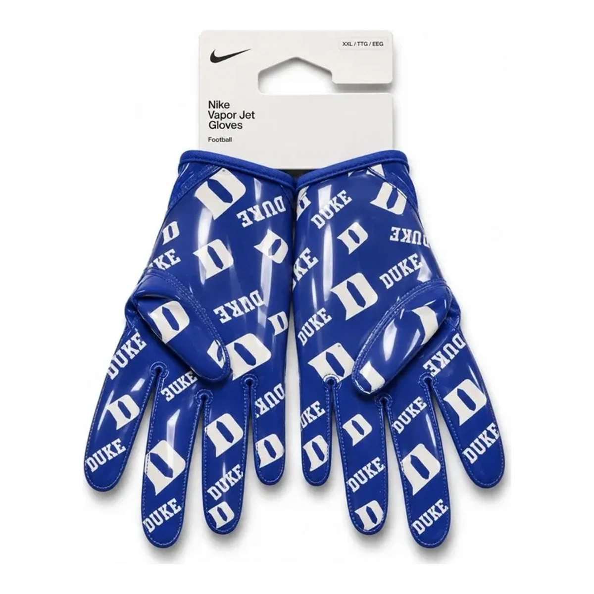
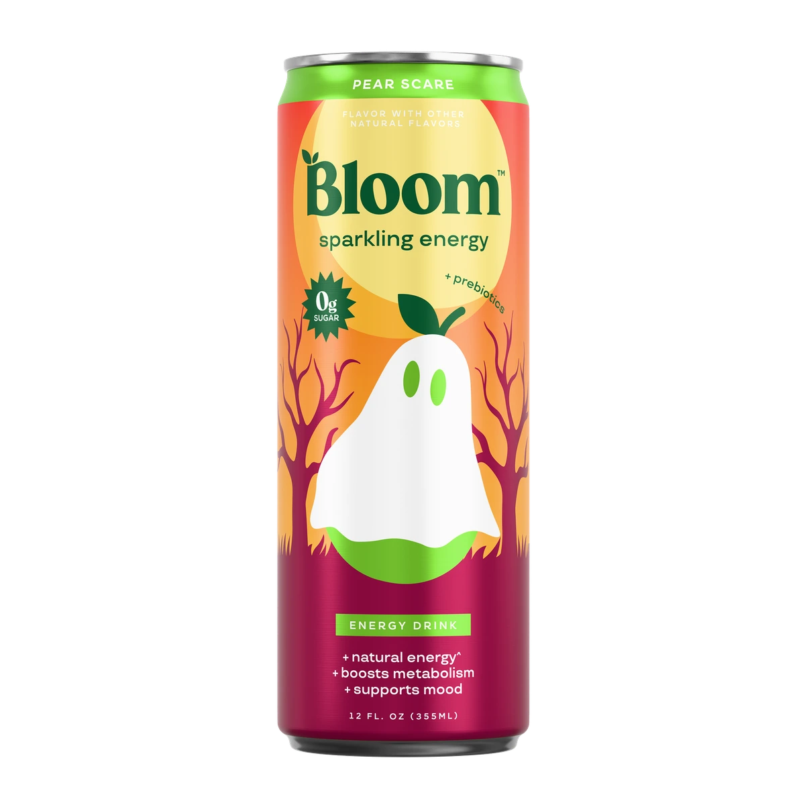
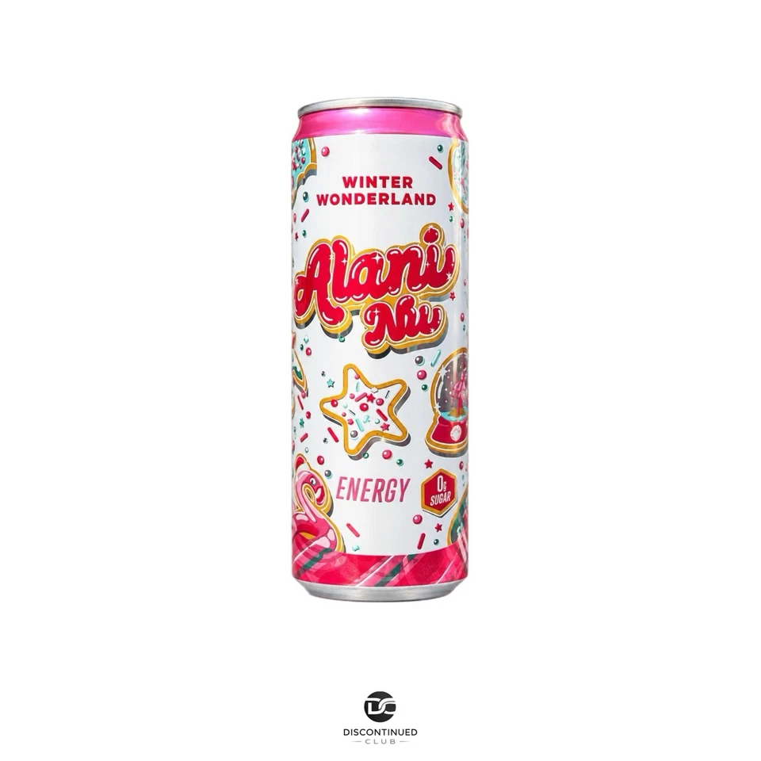
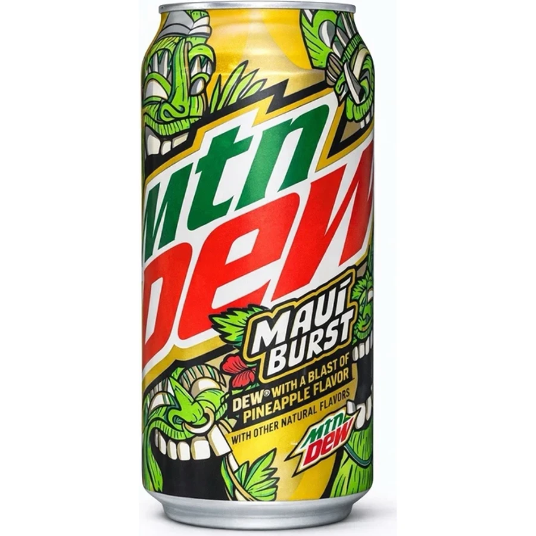

Pepsi Soda Shop Cream Soda: the bottle behind the throwback.
What made the 2021 Soda Shop release different, and what to check on a bottle today.
5 min read
What is new. What is gone. What is coming back.
Search is temporarily unavailable. You can still browse every article using the page links below.
1-6 of 102 articles

What made the 2021 Soda Shop release different, and what to check on a bottle today.

The actual team designs, size checks, and the difference between a team logo and documented provenance.

Pear and cinnamon, one can at a time. The price, expected ship date, and details of our new preorder.

A familiar holiday name, a different recipe. What to know about the sugar-cookie edition before buying.
The strawberry-lemonade release, its music connection and why the exact words on the can matter.

A retailer exclusive and a Summer of Baja release: compare the history, the containers and the questions to ask before buying.